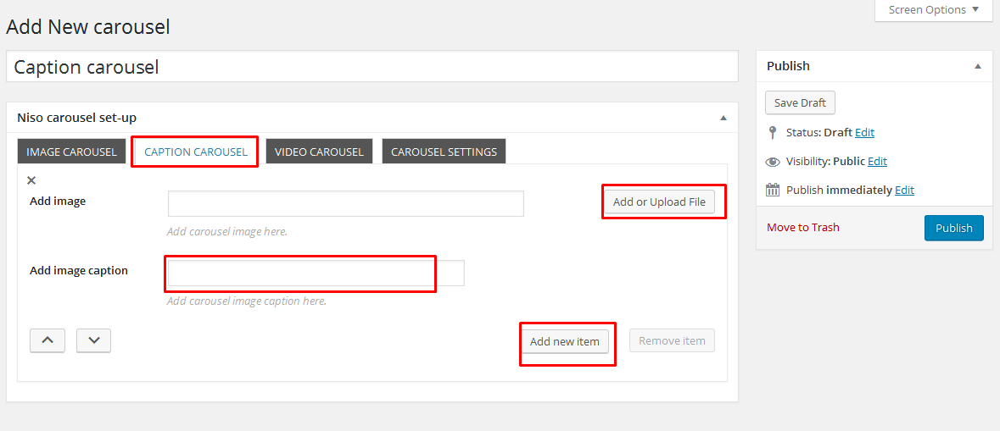
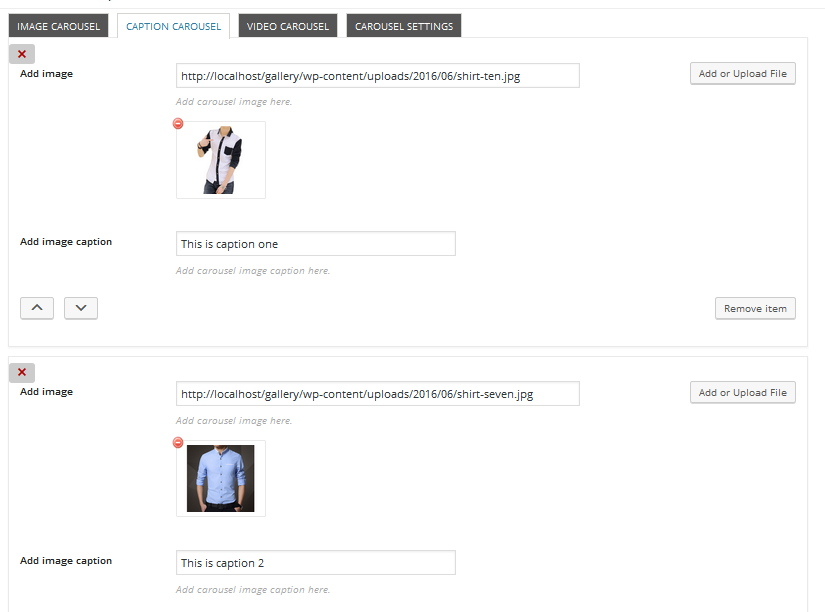
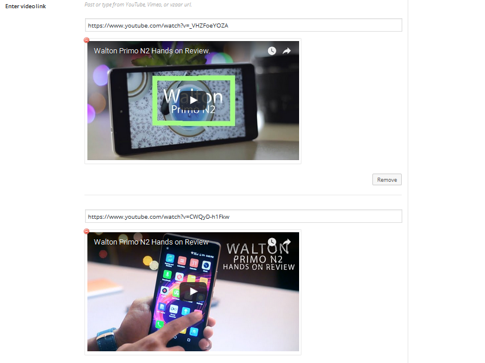

Niso carousel slider Documentation
1.Introduction
Thank you for use my plugin.
I truly appreciate it. I've spent a considerable period of time developing this and hope to have ironed out most bugs before its release. If you do find any issues,please feel more than free to email us via my codecanyon profile page.
2.Installation
You can install the plugin one of two ways:
Install using FTP
- Unzip the Niso-carousel.zip file locally to your machine
- Connect to your FTP area using your preferred FTP package
- Upload the Niso-carousel.zip folder that you extracted from the zip file to the plugin folder of your WordPress installation (wp-content -> plugin)
- Go to plugin and activate Niso carousel.
Install by WordPress (recommended)
- Login to your WordPress admin area.
- Navigate to plugin and click the Add New button at the top.
- Click the Upload plugin button at the top.
- Click the Choose File button and locate the Niso-carousel.zip.zip file on your machine and click the Install Now button.
- On the basis the plugin installs correctly, click the Activate link.
Plugin Overview
What does this plugin do?
Niso carousel slider is nice image and video carousel wordpress plugin. You can use this plugin any wordpress site for create carousel.
Niso carousel slider is one of the most user friendly wordpress plugin.You can create unlimited image carousel and video carousel with lots of options by Niso carousel slider.You can set new options for every carousel.Niso carousel slider also support image lightbox .Niso carousel slider has lots of icons for arrow button.Niso carousel slider supports arrow button, dots, variable width, center mode, Animation, Caption, hover caption, Lazy load, Mousewheel, RTL and much more.
Features:
Most powerful features:
- Multiple image and video carousel.
- Single image and video carousel.
- Lots of icon for arrow button.
- Image caption support.
- Lazy load support.
- Border support.
- Four different image size supports.
- User-friendly Editor.
- CSS3 Animation support.
- Images lightbox support.
- Mousewheel support
- Carousel center mode.
- Carousel variable height.
- RTL support.
- Different dots position.
- Different arrow position.
- Full Responsive.
Active plugin
After active this plugin you will see new menu in Dashboard.
Now click Niso carousel slider > add new carousel menu and get all options for create carousel.
Add new carousel:-
Enter Carousel name
Write your carousel Name.This name help you select this carousel next time.
Add image carousel
Click image carousel button in tab and then click add or upload files for add carousel images.
After upload image.Now click publish button
You will get carousel shortcode
Add caption carousel
Click caption carousel button in tab and then click add or upload file for add image.Write caption in caption box.Now click add new item button for add more image and caption.Minimum 5 items for carousel.
After image and caption text add.
Add Video carousel
Click Video carousel button in tab and then set video height and width .Now add video links in video link box.Click add more video link button for more video link add.add 4 or more video link for carousel.
Copy and past video link like this.
After publish video see this video in back end
Carousel settings
Click carousel settings button in tab and then you will see two setting buttons 1. Multiple image carousel 2. Single image carousel.
Multiple image carousel settings.
Select image size
Five image size supports this plugin you can select one.
Imgaes show large screen
Set images number for large screen.
Imgaes show medium screen
Set images number for medium screen.
Imgaes show in tab
Set images number for tab.
Use item margin
You can use or hide item margin feature.This margin separate each image right and left.
Set carousel image item margin
If you use margin set margin number.
Infinite loop
You can hide or active infinite loop feature.If you active this your carousel image scroll limitless.
Carousel top bottom margin
Set carousel top bottom margin by px.Default margin 10px.
Carousel auto play
If you active carousel auto play you will get four more options for auto play setting.
Auto play speed
Set auto play speed set by millisecond.Default speed 300 millisecond.
Auto play speed time out
Set auto play speed time out set by millisecond.Default speed 3000 millisecond.
Push on hover
Auto play push when carousel hover.
Image scroll at a time
How many image scroll at a time set by this options.
Carousel smart speed
Smart speed set by millisecond.Default speed 250px.
Carousel navigation
Show next prev button by this option.If you active this feature you will get more 9 options.
Select navigation arrows icons
Select icons for navigation buttons.
Select navigation arrows position
You can set navigation buttons six different position.Select one position.
Select arrow button top bottom margin
Top bottom margin set if needed.
Arrows background color
Set background color By this color picker.
Arrows background hover color
Set background hover color By this color picker.
Arrows background opacity
Background opacity set by px.
Arrows icon color
Icon color set by this color picker.
Arrows icon hover color
Icon hover color set this options.

Carousel navigation speed
Set carousel navigation speed by millisecond.
Carousel dots
If you active this feature you will get more two options.Dots show bottom of carousel.
Carousel dots position
You can set dots 3 different position.
Carousel dots speed
Set dots speed by millisecond.
Carousel center mode
Enables centred view with partial prev/next slides. Use with odd numbered slidesToShow counts.
Center mode padding
Padding left and right on stage (can see neighbours).
Carousel border
You will get three more options when active this option.
Border type
Two border type these are solid and dotted.
Border color
Border color set by color picker.
Carousel image lightbox
Niso carousel slider support image lightbox.You may use this feature.This lightbox not for video carousel.
Carousel image lightbox effect
If use lightbox select lightbox effect.
Mouse drag
Mouse dragging feature.
Touch drag
Touch dragging feature.
Pull drag
Stage pull to edge.
Free drag
Item pull to edge.
Auto height
upload different height image for auto height.
Active mousewheel scrolling
add mouswheel scrolling for fantastic scroll.
Lazy load
Lazy load images.Lazy load not for video carousel.
Carousel start position
Set Start position by number.
Select caption style
This setting only for caption carousel.
Single image carousel settings.
Select image size
Select single image size for carousel.
Single item animation in
Select single item animation in.
Single item animation Out
Select single item animation Out.
Niso carousel slider shortcode
After published carousel you will see new shortcode.
You also see this shortcode in carousel list and wordpress TinyMCE custom Niso carousel slider button.
Shortcode use
Go add new page or post and click Niso carousel slider custom button then select your carousel and click ok button.
This is your shortcode now publish it.
Copy shortcode this Niso carousel slider list.
Now past this shortcode in template file.
<?php echo do_shortcode('[ncarousel id="665"]');?>